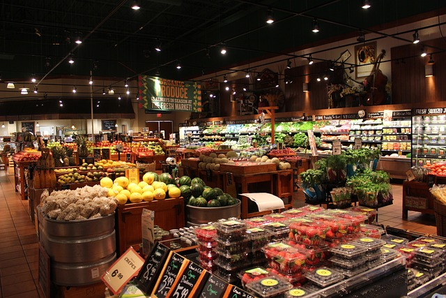

Welcome to our farm shop website, where you can find all the information you need about our products and services.
The farm shop offers a wide range of fresh products, from jams and preserves to eggs and bacon.
Our free-range eggs are laid by the chickens on our farm.
Our pork is reared in the fields around our house, giving it a distinctive flavor.
Choose from award-winning pies with fillings such as apricot or blackberry, hand-made chocolates, local honey and marmalade, homemade breads and cakes, and locally sourced fruit juices, wines, beers, and ciders.
We also sell fresh vegetables grown in our garden!
